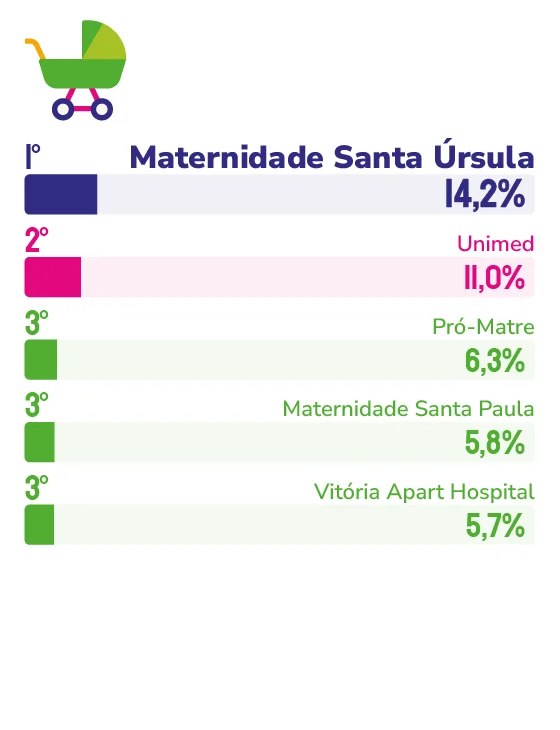

MATERNIDADE PARTICULAR
De referência histórica em
partos a hospital geral de alta complexidade, Meridional Vitória consolidou um vínculo que atravessa gerações de
famílias capixabas.
O hospital que hoje reúne pronto-socorro, oncologia, radioterapia e centro de diagnóstico começou como uma maternidade. A transição aconteceu com a integração à Rede Meridional, movimento que trouxe investimentos em infraestrutura e tecnologia e ampliou a capacidade de atendimento da instituição. O resultado foi a consolidação de um hospital geral de alta complexidade, mas sem abrir mão da base que sustentou seu reconhecimento ao longo dos anos: o vínculo com famílias que passaram por ali em diferentes momentos da vida.
“O Meridional Vitória, que nasceu como Maternidade Santa Úrsula, faz parte da história de milhares de famílias capixabas”, aponta a diretora-executiva na Kora Saúde, Thais Guzzo Fraga. Para ela, o reconhecimento consecutivo como marca ícone confirma um vínculo que “atravessa gerações”, construído, segundo a executiva, sobre uma base que combina evolução constante com preservação de essência.
Essa evolução tem nome: integração à Rede Meridional. O movimento trouxe investimentos em infraestrutura e tecnologia que permitiram ao hospital ampliar radicalmente sua atuação. Ao pronto-socorro 24 horas somaram-se oncologia, radioterapia, centro de diagnóstico e múltiplas especialidades, formando um hospital geral de alta complexidade nascido de uma maternidade tradicional.
“Acreditamos que, quando as pessoas respondem à pesquisa, elas se lembram da segurança, do acolhimento, da qualidade da assistência e do cuidado que receberam”, diz Thais. É essa memória afetiva, ligada a um dos momentos mais marcantes da vida de uma família, que sustenta a permanência da marca na lembrança espontânea da população.
O reconhecimento técnico também chegou: a instituição conquistou a Acreditação ONA Nível 2 – Acreditação Pleno, certificação que atesta rigorosos padrões de qualidade e segurança do paciente, uma validação formal de um compromisso que, segundo a executiva, já orientava a rotina do hospital muito antes do selo.
Para os próximos anos, a aposta é na consolidação de um ecossistema de saúde integrado, com expansão da alta complexidade e fortalecimento da oncologia dentro da Rede Meridional. Mas há um ponto que a executiva faz questão de deixar claro: por mais que a tecnologia avance, o cuidado não muda de lugar. “A melhor tecnologia sempre precisa caminhar ao lado do acolhimento, do respeito e do compromisso com a vida”, afirma.

Dra. Thais Guzzo Fraga
Diretora-executiva na Kora Saúde
“Nossa história é feita de gente que confiou em nós num dos momentos mais importantes da vida – o nascimento de um filho – e continuou por perto quando a jornada de saúde pediu outros cuidados. Isso não se constrói da noite para o dia, e é isso que pretendemos preservar mesmo enquanto o hospital segue crescendo.”
143
